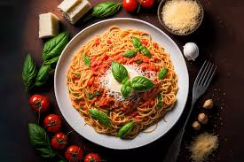
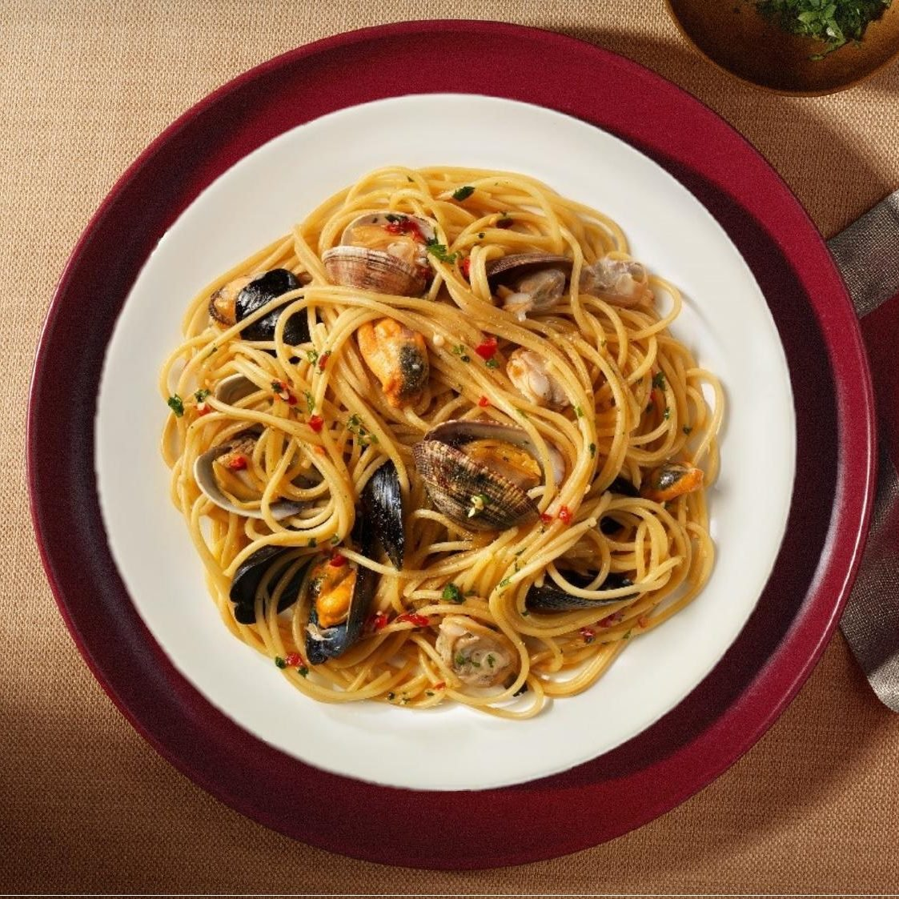

- О нас
- Наша история
- Наша специализация
- Меню
- Основное меню
- Паста Болоньезе
- Спагетти с морепродуктами
- Итальянский обед
- Меню завтраков
- Меню бамбини
- Узнать больше об истории пиццы
La pizza migliore — сеть итальянских ресторанов, где каждый день пекут пиццу, делают свежую пасту и другие традиционные блюда Апеннинского полуострова. Спагетти и стейки, мидии и супы, брускетты и тирамису. В каждом блюде – тёплый бриз, брызги Средиземноморья, залитые солнцем холмы и бесконечная дольче вита.
В началоС 1993 года! Мы не раз становились брендом года EFFIE и лучшим итальянским рестораном. Мы успели открыться не только в Москве, но и в Санкт-Петербурге, Екатеринбурге, Владивостоке, Краснодаре, Пятигорске, Новосибирске и других городах. Мы очень этим гордимся, но ещё больше нас вдохновляет, что вы доверяете нам и приходите на ужин после работы, отметить день рождения или просто расслабиться за бокалом вина с друзьями.
В началоИтальянская кухня: мы тщательно следим за качеством и никогда не соглашаемся на компромиссы. Для нас важно, чтобы в вашей «Маргарите» была та самая моцарелла, а в «Арабьяте» – лучшие томаты. Ведь итальянская кухня – это больше, чем просто еда. А IL Патио – больше, чем просто ресторан. Это вкус и характер Италии. Яркий, шумный, живой.
В началоПаста болоньезе
Само название говорит о его происхождении, Болоньезе родом из итальянской провинции Болоньи. Основой этого блюда является соус Болоньезе — густой томатно-мясной соус с овощами, который, в классическом варианте, подаётся с пастой тальятелле — это широкая итальянская лапша. Однако очень часто можно встретить вариацию этого блюда под названием «Спагетти Болоньезе», разница лишь в том, что вместо пасты тальятелле используются более распространённые во всём мире спагетти. Также соус Болоньезе может использоваться в других блюдах, например при приготовлении лазаньи.
{kind=link}
Спагетти с морепродуктами
Паста с морепродуктами - это изысканное и популярное во всем мире блюдо итальянской кухни. Его отличительными особенностями являются использование пасты в качестве основы и добавление разнообразных даров моря - креветок, мидий, кальмаров, осьминогов и других.
{kind=link}